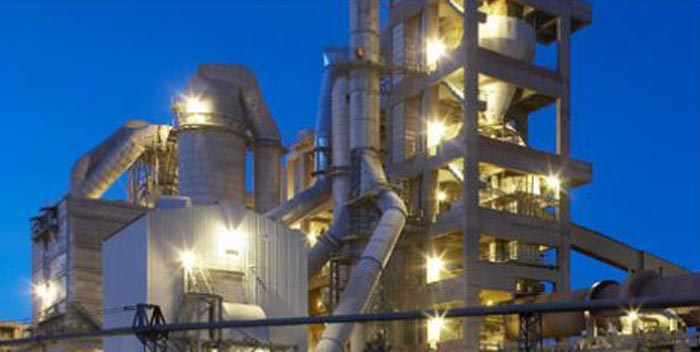
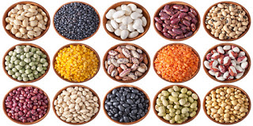

sanayi
Aksaray'da: Mercedes-Benz Türk Kamyon Fabrikasý, Sütaþ Süt Fabrikasý, Balküpü Þeker Fabrikasý, Un fabrikalarý,
Sivas'ta: Lokomotif, benzin, motor, çimento ve inþaat malzemeleri sanayii ile devlet demir yollarýnýn tren, vagon imalatý yapan TÜDEMÞAÞ fabrikasý vardýr.
Ankara'da: Makine, uçak, savunma sanayii, elektrikli ev aletleri, elektronik, dokuma, gýda ve içki, tarým araçlarý, çimento, alçý ve mobilya sanayii,elektrik üretimi-kömür madeni,trona madeni üretimi ve soda külünün ihracatý
Konya'da: Tarým araçlarý, besin, motor, çimento, süt ürünleri ve inþaat malzemeleri sanayi, EREÐLÝ ÞEKER,Çumra Þeker Fabrikasý,ILGIN ÞEKER fabrikasý ve Konya þeker fabrikasý bulunmaktadýr.
Niðde'de: Rot baþý fabrikasý,halý fabrikasý,þeker fabrikasý,gazoz fabrikasý,beton santrali,otomotiv yan sanayi
Kayseri'de: Halýcýlýk, mobilya, þeker fabrikasý, yem, savunma sanayi, kimyasal ürünler, elektronik, beyaz eþya, cnc tezgah üretim sanayi, meyve suyu, pamuklu dokuma, pastýrma ve sucuk üretim merkezleri gibi azami 1100 fabrika ile anadolunun üretim lokomotifi.
Kýrýkkale'de: Orta Anadolu petrol rafinerisi, silah fabrikasý, demir -çelik endüstrisi
Eskiþehir'de: Besin, yem, çimento endüstrisi, raylý sistemler, lokomotif(Tülomsaþ), hava sanayi(Tusaþ,TEI)
Yozgat'ta: Çimento,linyit kömür madeni,Þeker fabrikasý,besin,tekstil
Karaman'da : Bisküvi (Bifa, Saray), gofret, þekerleme, süt fabrikasý (Halk). Tahýl ürünleri, buðday, mýsýr, ayçekirdeði ve özellikle yurtdýþýna ihracý yapýlan elma üretimi
Ýç Anadolu Bölgesi, Türkiye’nin yedi coðrafik bölgesinden biridir. Anadolu’nun merkezinde bulunur. Yüz ölçümü geniþtir. Tarým alanlarý geniþ yer kaplar. Ýklim ve bitki örtüsü bakýmýndan farklý özellikler barýndýrýr. Hayvancýlýk da tarým ile birlikte yapýlmaktadýr.
Ýç Anadolu Bölgesi’nde Karasal Ýklim etkilidir. Yazlarý sýcak ve kurak, kýþlarý soðuk ve kar yaðýþlý geçmektedir. Bitki örtüsü bozkýrdýr. Yeryüzü þekilleri bakýmýndan ovalar ve daðlardan oluþur.
Ýç Anadolu Bölgesi’nde tarým coðrafik þartlar gereðince geliþmeye devam etmektedir. Kuraklýklar ülke genelinde de tarýmý etkilemektedir. Sulama tesislerinin kurulmasýyla bu sorunlar aþýlmaktadýr.
Ýç Anadolu Bölgesi’nde yetiþen tarým ürünleri þu þekildedir:
*Buðday
*Arpa
*Þeker Pancarý
*Elma
*Armut
*Baklagiller
*Fasulye
*Nohut
*Mercimek
*Bakla
*Ayçiçeði
*Badem
*Patates
*Soðan

